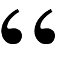

Entendendo o Git
Sérgio Giraldo
Out-2019
made with ♥ using Higgins

The first commit message for the Git project was ‘initial version of
“git”, the information manager from hell’
I’m an egotistical bastard, and I name all my projects after myself.
First Linux, now git.
O Git guarda arquivos para nós!
O Git é um grafo acíclico orientado!

**from git-it**


## git add .
Sinaliza que há mudanças, nada mudou ainda.

## git commit -m "first version"
Está no local, não está no remoto.

## git push
Está no local e no remoto.

Seu colega não sabe que você já trabalhou os arquivos 1 e 2 ...
Não está no local e está no remoto.

## git pull
Está no local e no remoto.
Agora ele sabe :)

## git add File1.txt
## git commit -m "New feat"
## git push

Commits são nós no grafo!
O hash do commit é construído a partir do conteúdo e dos pais do nó
Branch é a referência de um commit!

Vou criar uma branch!
## git checkout -b "Cool"

## git commit -m "image as text file!"

## git push --set-upstream origin Cool

## git checkout master
## gite merge cool

git clone https://github.com/ourSuperTeam/project.git
Se quiser trabalhar no dia-a-dia 😃:
git checkout master
Se quiser trabalhar no futuro 🙃:
git checkout cool
## Mais alguns pontos, não muitos
* diretório *.git*;
* ./config
* /objects
* /refs
* arquivos são gravados compactados em zlib, como blobs;
* grava-se o **conteúdo**, i.e., se dois arquivos com mesmo conteúdo estão em 2 diretórios diferentes, o git grava apenas 1;
* os commits podem ser reordenados (rebase, squash), isto é outro tap 🤓
Resumo
add
commit
push
pull
branch
checkout
clone
merge
# Hands On
* criar um repositório, clonar e criar primeiro arquivo;
* que eu fiz ultimamente?
* que eu mudei neste arquivo?
* criar uma branch e trabalhar nela;
* mudar um ou mais arquivos e voltar para a versão original;
* e se já fiz commit?
* commit e push?
# Hands On
* stash
* fazer merge com tudo certo
* fazer merge com conflitos
* ninja na linha de comando
# Receitas
* criar um repositório, clonar e criar primeiro arquivo
# Receitas
* que eu fiz ultimamente?
# Receitas
* que eu mudei neste arquivo?
# Receitas
* criar uma branch e ver a diferença entre as branches
# Receitas
* mudar um ou mais arquivos e voltar para a versão original
* e se já fiz commit? commit e push?
* stash
# Receitas
* fazer merge com tudo certo
# Receitas
* fazer merge com conflitos
# Receitas
* ninja na linha de comando
Resumo final
add
commit
push
pull
branch
checkout
clone
merge
log
status
diff